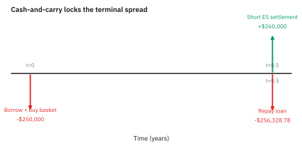
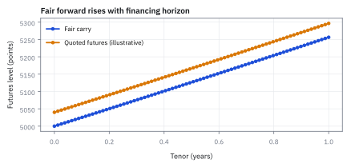
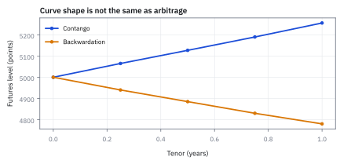
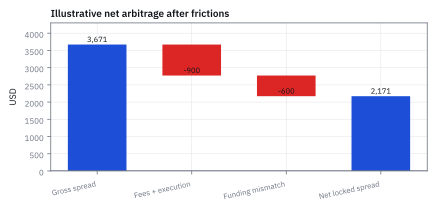

19.1 Cost of Carry and Cash-and-Carry Arbitrage
สัญญาซื้อของวันหน้าไม่ได้ตั้งราคาจากคำทำนาย แต่เริ่มจากต้นทุนซื้อและถือของวันนี้
ของชิ้นหนึ่งราคา 5,000 USD วันนี้ มีคนยอมตกลงตอนนี้ว่าจะซื้อจากคุณอีก 6 เดือนที่ 5,200 USD คุณล็อกกำไรได้เลย หรือแค่กำลังมองตัวเลขสองวันที่ยังเทียบกันไม่ได้?
คำตอบคือ: ลองเดาก่อน: ถ้ากู้ 5,000 USD มาซื้อของ แล้วดอกเบี้ยทำให้หนี้โตเป็นเพียง 5,126.58 USD ตอนส่งมอบ ราคาขาย 5,200 USD เหลือส่วนต่าง 73.42 USD ต่อหน่วยโดยไม่ต้องเดาว่าราคาตลาดวันนั้นจะไปไหน
นี่คือแกนของ cost of carry: ตลาดยื่นโจทย์บัญชีมาให้ ไม่ได้ยื่นลูกแก้วทำนายราคา.
ศัพท์ที่ต้องใช้ก่อนเริ่ม
- spot
-
คืออะไร: ราคาสำหรับซื้อขายและส่งมอบกันเดี๋ยวนี้
ใช้ทำอะไร: เป็นจุดตั้งต้นของการคำนวณทั้งหัวข้อ
ทำไมต้องแยกให้ชัด: เพราะราคานี้กับราคาส่งมอบในอนาคตไม่เท่ากัน และส่วนต่างนั้นไม่ใช่คำทำนาย แต่เป็นต้นทุนของการถือของไว้
- forward
-
คืออะไร: สัญญาที่ตกลงกันตัวต่อตัวว่าจะซื้อขายในอนาคตที่ราคาที่กำหนดวันนี้
ใช้ทำอะไร: ใช้ล็อกราคาไว้ล่วงหน้า
ทำไมต้องแยกจากตัวถัดไป: เพราะไม่มีการชำระเงินระหว่างทางเลย กำไรขาดทุนทั้งหมดเกิดตอนจบครั้งเดียว และคู่สัญญาอาจเบี้ยวได้
- futures
-
คืออะไร: สัญญาแบบเดียวกันแต่ซื้อขายในตลาดกลาง และชำระกำไรขาดทุนกันทุกวัน
ใช้ทำอะไร: ใช้ล็อกราคาโดยมี clearing house และหลักประกันช่วยลดความเสี่ยงที่อีกฝ่ายไม่จ่าย ความเสี่ยงไม่ได้หายหมด
ทำไมความต่างนี้ถึงมีผลกับราคา: เพราะการชำระทุกวันทำให้เงินไหลเข้าออกระหว่างทาง และเงินนั้นมีดอกเบี้ย ราคาของสองสัญญาจึงไม่เท่ากันเป๊ะเมื่อดอกเบี้ยไม่คงที่
- underlying และ expiry
- underlying คือสินทรัพย์หรือดัชนีที่สัญญาอ้างอิง; expiry คือวันส่งมอบหรือชำระราคา ซึ่งกำหนด horizon ของการคำนวณ
- cost of carry
- ต้นทุนสุทธิของการถือ underlying จนถึง expiry: financing และค่าใช้จ่ายถือครอง หักรายได้ระหว่างทาง ใช้สร้างราคาทฤษฎีของ forward
- cash-and-carry
- ซื้อ underlying ด้วยเงินกู้แล้ว short สัญญาล่วงหน้า เพื่อเก็บส่วนต่างเมื่อ futures แพงกว่าต้นทุนถือครอง
- no-arbitrage
- เงื่อนไขที่ราคาสอดคล้องจนไม่มีชุดธุรกรรมให้กำไรแน่นอนโดยไม่รับความเสี่ยง ใช้บังคับความสัมพันธ์ระหว่าง spot, forward และ financing
- notional
- มูลค่าอ้างอิงเต็มของสัญญา ไม่ใช่เงินสดที่จ่ายทันที ใช้แปลงการขยับราคาเป็น USD P&L
- bid–ask spread
- bid คือราคาที่ขายได้ และ ask คือราคาที่ซื้อได้; ใช้ส่วนต่างนี้แทนค่าผ่านทางการเข้าออกที่ต้องหักจาก arbitrage บนกระดาษ
- basis
- ส่วนต่างระหว่างราคาสินทรัพย์กับสัญญาล่วงหน้า ใช้ตรวจว่า proxy ที่ถืออยู่ตรงกับ underlying ของสัญญาหรือไม่
สัญกรณ์และหน่วย
| สัญลักษณ์ | ความหมาย | หน่วย |
|---|---|---|
| $S_0$ | spot price ของ underlying ณ เวลาเริ่มต้น | USD ต่อหน่วยหรือจุดดัชนี |
| $F_0$ | ราคาที่ตกลงวันนี้เพื่อส่งมอบหรือชำระที่ expiry | USD ต่อหน่วยหรือจุด |
| $r$ | อัตรา financing แบบต่อเนื่องในแบบจำลองนี้ | ต่อปี |
| $T$ | เวลาจากวันนี้ถึง expiry | ปี |
| $Q$ | จำนวนหน่วยของ underlying ที่จำลองหรือถือ | หน่วย |
| $M$ | ตัวคูณสัญญา ES ที่แปลงจุดเป็น USD | USD ต่อจุดต่อสัญญา |
| $D_0$ | มูลค่าปัจจุบันของรายได้หรือเงินปันผลระหว่างถือ underlying | USD |
ที่มาที่ไป: ราคาส่งมอบวันหน้า ไม่ใช่คำทำนายราคาวันหน้า
ความเข้าใจผิดที่พบบ่อยที่สุดเรื่องตลาดล่วงหน้าคือ คนคิดว่าราคาสัญญาส่งมอบปีหน้า คือสิ่งที่ตลาดคาดว่าราคาปีหน้าจะเป็น
สำหรับสินทรัพย์ที่ซื้อ ถือ และขาย short ได้ตามสมมติฐาน ราคาถูกจำกัดด้วยต้นทุนของธุรกรรมเหล่านี้ ราคาล่วงหน้าจึงไม่ใช่คำทำนายราคาปลายทางโดยตรง
เหตุผลคือถ้าใครอยากได้ของในอีกหนึ่งปี เขามีสองทางเลือก คือซื้อสัญญาล่วงหน้า หรือกู้เงินมาซื้อของวันนี้แล้วเก็บไว้ สองทางนี้ให้ผลเหมือนกัน จึงต้องมีต้นทุนเท่ากัน
ความสัมพันธ์นั้นทำให้ราคาล่วงหน้าเท่ากับราคาวันนี้บวกต้นทุนการถือ โดยยังไม่ได้บอก expected spot price ในโลกจริง รายได้และต้นทุนถือครองที่ไม่แน่นอนยังต้องประมาณต่างหาก
เริ่มจากคำสัญญาธรรมดา แล้วค่อยตั้งชื่อ
สมมติวันนี้ตกลงราคาซื้อขายของหนึ่งชิ้นไว้ แต่จะส่งของและจ่ายเงินอีก $T$ ปี สัญญาแบบตกลงกันตรง ๆ นี้เรียกว่า forward ส่วนสัญญามาตรฐานที่ซื้อขายในตลาดกลางและเคลียร์กำไรขาดทุนเป็นระยะเรียกว่า futures; กลไกรายวันของ futures จะสอนเต็มในหัวข้อ 19.2
ตอนนี้ใช้ตลาดในฝันก่อน: กู้และฝากได้ที่ rate เดียวกัน ไม่มีภาษี ไม่มีค่าซื้อขาย และของไม่จ่ายรายได้ระหว่างทาง ซื้อของวันนี้ด้วย $S_0$ แล้วถือถึงวันส่งมอบ หนี้ที่ใช้ซื้อจะโตตามเวลา ดังนั้นราคาวันหน้าต้องชดเชยทั้งราคาของวันนี้และต้นทุนเงินทุน ก้อนนี้เรียกว่า cost of carry
ในตัวอย่างตลาดจริงภายหลัง เราจะใช้ E-mini S&P 500 futures หรือ ES ซึ่งเป็นสัญญาที่อิงดัชนีหุ้นสหรัฐฯ การขยับ 1 index point มีมูลค่า 50 USD ต่อสัญญา ตรงนี้เป็นเพียงการเอากลไกเดิมไปใส่หน่วยของตลาด ไม่ใช่แนวคิดใหม่
ลองปิดบัญชีสองราคาปลายทาง
เริ่มจาก forward หนึ่งหน่วยที่ชำระส่วนต่างตอนจบ ซื้อของไว้และตกลงขายล่วงหน้าที่ 5,200 USD หนี้ตอนจบ 5,126.5756 USD มาจากเงินกู้ 5,000 USD ที่ 5% แบบต่อเนื่องนานครึ่งปี
ถ้าของเหลือ 4,000 ขายของได้เงิน 4,000 และ forward จ่ายเพิ่ม 1,200 ถ้าของขึ้นเป็น 6,000 ขายของได้เงิน 6,000 แต่จ่ายส่วนต่าง forward 800 ทั้งสองทางรับสุทธิ 5,200 ก่อนคืนหนี้ ราคาปลายทางจึงหักล้างกัน
การหักล้างนี้อธิบายว่าทำไมสูตรไม่ต้องใช้คำทำนายราคา หากเปลี่ยนเป็น futures ต้องเตรียมเงินรับจ่ายระหว่างทางด้วย ตัวอย่างข้างล่างใช้ราคาตาม carry เป็น benchmark และยังละต้นทุนสภาพคล่องนี้
ขั้นที่ 1 — ทบต้นเงินที่ใช้ซื้อ
งานแรกคือย้ายต้นทุนซื้อของวันนี้ไปยังวันส่งมอบ เพราะยังบวกเงินคนละวันกันไม่ได้ สี่บรรทัดนี้แสดงว่ารูป exponential ไม่ได้ต่างจากหัวข้อ 18.1 โดยหลักการ มันคือรูปเดิมที่คิดดอกเบี้ยถี่จนสุด และถูกเลือกเพราะเลขชี้กำลังบวกกันได้
เริ่มจากสูตรทบต้นของหัวข้อ 18.1 แต่คิดดอกเบี้ยถี่ขึ้นเป็น $m$ ครั้งต่อปี แต่ละครั้งได้อัตราส่วนด้วยจำนวนครั้ง และจำนวนงวดทั้งหมดคือ $m$ คูณจำนวนปี
ทีนี้ถามว่าถ้าคิดถี่ขึ้นไม่สิ้นสุดจะเกิดอะไร ตัวคูณไม่ได้โตไม่สิ้นสุด มันลู่เข้าหาเลขยกกำลังธรรมชาติ ซึ่งเป็นนิยามของ $e$ ในรูป limit
เหตุผลที่ตลาดใช้รูปนี้ไม่ใช่เพราะสวย แต่เพราะมันบวกกันได้ตรง ๆ ในเลขชี้กำลัง การถือสองช่วงต่อกันจึงคูณตัวคูณสองตัว แล้วเลขชี้กำลังบวกกันพอดี
ลองด้วยเลขจริง ได้ 5,256.36 ซึ่งสูงกว่าการคิดปีละครั้งที่ให้ 5,250 เล็กน้อย ส่วนต่างคือดอกเบี้ยของดอกเบี้ยระหว่างปี
ขั้นที่ 2 — ราคาล่วงหน้าที่ไม่มีรายได้
งานที่สองคือเทียบสองวิธีที่ให้ของชิ้นเดียวกันในวันเดียวกัน ห้าบรรทัดนี้ไม่ได้ใช้แบบจำลองราคาเลย ไม่ต้องรู้ว่าราคาจะขึ้นหรือลง เหตุผลทั้งหมดคือถ้าสองทางไม่เท่ากัน จะมีเงินฟรีให้เก็บ ซึ่งเป็นตรรกะเดียวกับหัวข้อ 13.4
$K_A$ คือหนี้ที่ต้องใช้คืนในวันส่งมอบ ถ้าเลือกทางที่หนึ่ง คือกู้เงินมาซื้อของวันนี้แล้วถือไว้ ตัวเลขมาจากขั้นที่ 1
$K_B$ คือหนี้ในวันเดียวกัน ถ้าเลือกทางที่สอง คือเซ็นสัญญาวันนี้โดยไม่จ่ายอะไร แล้วจ่ายราคาที่ตกลงตอนส่งมอบ
บรรทัดที่สามคือหัวใจ: สองทางจบลงเหมือนกันทุกประการ คือมีของหนึ่งชิ้นอยู่ในมือ หนี้สองก้อนจึงต้องเท่ากัน
ถ้าไม่เท่ากัน ก็เดินทางที่หนี้น้อยกว่าและขายทางที่หนี้มากกว่า เก็บส่วนต่างฟรีโดยไม่เสี่ยงอะไรเลย ราคาที่ตกลงจึงถูกบังคับตามบรรทัดที่สี่
บรรทัดสุดท้ายเขียนกลับทิศ คือคิดลดราคาสัญญากลับมาวันนี้ ต้องได้ราคาวันนี้พอดี
แล้วเอาไปใช้ทำอะไรได้จริงบ้าง
ความสัมพันธ์ระหว่างราคาปัจจุบันกับราคาส่งมอบล่วงหน้า เป็นกฎที่ตลาดล่วงหน้าทั้งหมดตั้งอยู่บน
ใช้ตรวจว่าราคาสัญญาล่วงหน้าที่เห็นสมเหตุสมผลหรือไม่
ใช้เลือกระหว่างซื้อของจริงกับซื้อสัญญาล่วงหน้า โดยเทียบต้นทุนรวมของสองทาง
ใช้เข้าใจว่าทำไมราคาสัญญาล่วงหน้าจึงสูงหรือต่ำกว่าราคาปัจจุบัน ซึ่งไม่ใช่การพยากรณ์ราคาอนาคต
Figure 1 — กระแสเงินสดของ cash-and-carry

ภาพนี้เอาแนวคิดไปใส่ ES หนึ่งสัญญา: กู้เงินซื้อชุดหุ้นที่เลียนแบบดัชนี แล้วขาย futures ไว้ล่วงหน้า ฝั่งหุ้นทำให้เรามีของ ส่วน futures ล็อกราคาขาย หากเงินรับมากกว่าหนี้ตอนจบ ส่วนต่างนั้นไม่ต้องพึ่งการเดาทิศทางตลาด
Worked Example — ราคาบนจอแพงกว่าต้นทุนถือจริงไหม
ถาม: ES อ้างอิงดัชนีที่ 5,000 จุด และ futures อายุ 6 เดือนเสนอที่ 5,200 จุด ถ้า financing rate เป็น 5% ต่อปีแบบต่อเนื่อง ส่วนต่างขั้นต้นต่อหนึ่งสัญญาเท่าไร?
ของที่มี: spot 5,000 จุดบอกมูลค่าของดัชนีวันนี้, $r=0.05$ บอกต้นทุนเงินต่อปี, $T=0.5$ ปีบอกเวลาถึงวันหมดอายุ และ multiplier $M=50$ USD ต่อจุดแปลงคำตอบจากจุดเป็นเงิน ตัวอย่างสมมติว่าสร้างชุดหุ้นให้ตรงหนึ่งสัญญาได้และยังไม่หักค่าซื้อขาย
ขั้นที่ 3 — หา fair futures ก่อนดูส่วนต่าง
แทน spot, rate และเวลาในสูตร carry ก่อน เหตุผลคือเราต้องรู้ต้นทุนของทางเลือกซื้อวันนี้แล้วถือ ไม่เช่นนั้นคำว่า 5,200 แพงหรือถูกยังไม่มีฐานเทียบ
ของที่ใส่เข้าไป: spot 5,000 จุด, financing rate 0.05 ต่อปี และเวลา 0.5 ปี
สิ่งที่ทำ: ทบต้น 5,000 ด้วย $e^{0.05(0.5)}$
สิ่งที่ได้: fair futures เท่ากับ 5,126.5756 จุด หรือ 5,126.58 จุดเมื่อปัดสองตำแหน่ง ก่อนค่าซื้อขายและความคลาดเคลื่อนของชุดหุ้น
ขั้นที่ 4 — ลบราคา แล้วคูณหน่วยสัญญา
ลบ fair futures ออกจากราคา 5,200 เพื่อหาส่วนต่างเป็นจุด แล้วคูณ 50 USD ต่อจุด เหตุผลที่แยกสองงานนี้คือช่วยจับความผิดพลาดเรื่อง multiplier ได้ทันที
ของที่ใส่เข้าไป: ราคา futures บนจอ 5,200 จุด, fair futures 5,126.5756 จุด และ multiplier 50 USD ต่อจุด
สิ่งที่ทำ: ลบราคาเพื่อได้ 73.4244 จุด แล้วคูณด้วย 50
สิ่งที่ได้: กำไรขั้นต้นที่ล็อกตามแบบจำลองคือ 3,671.22 USD ต่อสัญญา ยังไม่ใช่กำไรสุทธิหลังค่าใช้จ่าย
เดินตามเงินจริง — ทำไมกำไรก้อนนี้รู้ผลตั้งแต่วันนี้
ถ้าราคาบนจอต่ำกว่าต้นทุนถือแทน ให้กลับทุกขาของตาราง คือขายชอร์ตดัชนี เอาเงินไปฝากกินดอกเบี้ย แล้วซื้อสัญญาล่วงหน้าไว้รับของคืน กำไรคำนวณแบบเดียวกันเป๊ะ ต่างแค่เครื่องหมาย
อ่านสามบรรทัดแรกรวมกัน วันนี้ควักเงินตัวเองศูนย์บาท เงินที่ใช้ซื้อดัชนีมาจากการกู้ทั้งก้อน ส่วนการขายสัญญาล่วงหน้ายังไม่มีเงินเปลี่ยนมือ
จุดที่ทุกอย่างลงตัวคือครึ่งปีถัดมา ของที่ถืออยู่ในมือถูกส่งมอบตามสัญญา ได้เงินตามราคาที่ล็อกไว้ตั้งแต่วันแรก ไม่ต้องถามตลาดว่าวันนั้นดัชนีอยู่ที่เท่าไร แล้วเอาเงินก้อนนั้นไปคืนหนี้พร้อมดอกเบี้ย
ลองมองหา $S_{T}$ ในบรรทัดพวกนี้ จะไม่เจอเลยแม้แต่ตัวเดียว นั่นคือทั้งหมดของเรื่อง ดัชนีจะพุ่งหรือจะพัง กำไรก็เท่าเดิม เพราะขาที่ถือของกับขาที่ขายสัญญาหักล้างกันพอดี
ของที่ลงทุนศูนย์บาท ไม่มีทางขาดทุน และรู้กำไรล่วงหน้า คือนิยามของ arbitrage ในตลาดจริงช่องแบบนี้ปิดภายในไม่กี่วินาที เพราะทุกคนเห็นพร้อมกันหมด
Figure 2 — fair forward ตาม maturity

เส้น fair carry สูงขึ้นเมื่อรอนานขึ้น เพราะเงินถูกผูกไว้นานกว่า ส่วนเส้นราคาตลาดที่อยู่สูงกว่าเป็นเพียงสัญญาณให้คำนวณต้นทุนต่อ ยังเรียกว่า arbitrage ไม่ได้จนกว่าจะหักค่าใช้จ่ายจริง
Figure 3 — contango กับ backwardation

contango คือราคาตามอายุสัญญาไล่สูงขึ้น ส่วน backwardation คือไล่ต่ำลง สองคำนี้บอกแค่รูปของเส้น ไม่ได้แปลว่าเงินฟรี เพราะ fair carry เองอาจสูงหรือต่ำกว่า spot ตามต้นทุนและรายได้ระหว่างถือ
ถ้ามีรายได้ระหว่างถือ
ถ้าของที่ถือจ่ายเงินระหว่างทาง ผู้ซื้อของวันนี้ได้รับเงินนั้น แต่ผู้ถือ forward ยังไม่ได้รับของ จึงต้องหัก present value ของรายได้ $D_0$ ออกจากเงินที่ต้องหาไปซื้อก่อน แล้วค่อยทบต้นยอดสุทธิถึงวันส่งมอบ
ขั้นที่ 5 — หักรายได้ของคนถือของจริง
วาง spot กับรายได้ให้อยู่ในมูลค่าวันนี้ก่อน แล้วทบต้นยอดสุทธิไปวันส่งมอบ หกบรรทัดนี้ใช้ตรรกะเดิมของขั้นที่ 2 ทุกประการ เพิ่มมาแค่ว่าทางที่หนึ่งต้องกู้น้อยลง และการเขียนเป็นสองทางแบบนี้ทำให้ไม่มีทางลืมว่าต้องหักที่มูลค่าวันไหน
ของที่ถือมีรายได้ระหว่างทาง รายได้นั้นเอาไปโปะหนี้ได้ จึงกู้น้อยลงตั้งแต่ต้น $C_0$ คือเงินสดสุทธิที่ต้องใช้วันนี้ในทางที่หนึ่ง
จุดสำคัญคือหักรายได้ที่มูลค่าวันนี้ ไม่ใช่หักตอนได้รับ การลบเงินคนละวันตรง ๆ เป็นความผิดพลาดที่ขั้นที่ 1 เตือนไว้ตั้งแต่ต้น
จากนั้นทบต้นเฉพาะยอดที่เหลือไปถึงวันส่งมอบ ส่วนหนี้ของทางที่สองเหมือนเดิมทุกอย่าง แล้วใช้เหตุผลเดียวกับขั้นที่ 2 คือสองทางจบเหมือนกัน หนี้จึงต้องเท่ากัน
แก้ออกมาแล้วกระจายวงเล็บ จะเห็นว่ารายได้ลดราคาสัญญาลงเท่าไร และลดเป็นมูลค่าที่ทบต้นถึงวันส่งมอบแล้ว ไม่ใช่มูลค่าดิบ
กับดัก: สูงกว่า spot ไม่ได้แปลว่าแพงเกิน fair
ความเชื่อที่ผิดคือเห็น futures 5,200 สูงกว่า spot 5,000 แล้วนับ 200 จุดเป็นกำไร ผลคือมองข้ามหนี้ที่โตเป็น 5,126.58 และประเมินกำไรเกินจริง วิธีแก้คือเทียบกับ fair carry ก่อน แล้วหัก bid-ask, ค่าธรรมเนียม, funding ที่กู้ได้จริง และ basis ของชุดหุ้น ส่วนต่างบนจอไม่ใช่เงินฟรี มันเป็นแค่คำเชิญให้เปิด spreadsheet
ข้อจำกัด: วิธีนี้สมมติอะไร และของจริงเป็นอย่างไร
| เรื่อง | วิธีนี้สมมติว่า | ของจริงเป็นอย่างไร | ผลที่ตามมาเวลาใช้งาน |
|---|---|---|---|
| ต้นทุนการถือ | รู้ต้นทุนการถือครองแน่นอน | ค่าเก็บรักษาและค่ายืมเปลี่ยนตลอด | ความสัมพันธ์นี้เป็นช่วง ไม่ใช่จุดเดียว |
| การขายยืม | ยืมของมาขายได้เสมอ | สินค้าโภคภัณฑ์บางตัวยืมไม่ได้ | ความสัมพันธ์บังคับได้ทางเดียว ราคาล่วงหน้าจึงต่ำกว่าที่ควรได้เป็นเวลานาน |
| การตีความ | ราคาล่วงหน้าคือคำทำนายราคาอนาคต | มันคือราคาปัจจุบันบวกต้นทุนการถือ | การใช้ราคาล่วงหน้าเป็นคำทำนายเป็นความเข้าใจผิดที่พบบ่อยที่สุดในเรื่องนี้ |
แถวล่างเป็นความเข้าใจผิดที่ต้องแก้ก่อน ไม่งั้นจะตีความเส้นราคาล่วงหน้าผิดทั้งหมด
Figure 4 — ส่วนต่างที่เหลือเมื่อรวมต้นทุน

เริ่มจากกำไรขั้นต้น 3,671.22 USD แล้วหักค่าซื้อขาย 900 USD กับ funding mismatch 600 USD เหลือ 2,171.22 USD ตาม scenario ในภาพ ถ้ายอดสุดท้ายไม่บวก ก็ไม่มี cash-and-carry ที่คุ้มให้ส่งคำสั่ง
ตอบ → เช็ก 10 วินาที → เอาไปใช้
คำตอบ: fair futures 6 เดือนคือ 5,126.5756 จุด หรือ 5,126.58 จุด จึงมีส่วนต่างขั้นต้น 73.4244 จุด และเท่ากับ 3,671.22 USD ต่อหนึ่งสัญญา
เช็กเร็ว: 73.4244 คูณ 50 ต้องได้ 3,671.22 และ fair futures ต้องสูงกว่า spot เล็กน้อยเมื่อ rate เป็นบวกแต่ไม่มีรายได้ ถ้าเครื่องคิดเลขให้ fair ต่ำกว่า 5,000 แปลว่าใส่เครื่องหมายผิด
บน desk ตัวเลขนี้เป็นเพดานงบต้นทุน ไม่ใช่คำสั่งซื้อขาย ถ้า bid-ask, fee, funding mismatch และ basis รวมเกิน 3,671.22 USD ให้หยุด เพราะส่วนต่างที่ดูสวยถูกกินหมดแล้ว
สรุปที่ใช้ได้จริง
- $F_0=S_0e^{rT}$ ในแบบจำลองไม่มีรายได้: ราคาล่วงหน้าคือ spot ที่ถูกทบต้นตาม horizon ไม่ใช่ forecast ของราคาอนาคต
- cash-and-carry คือซื้อ underlying และ short futures เมื่อราคาสัญญาสูงกว่าต้นทุนถือครองที่ปรับรายได้แล้ว
- ตัวอย่าง ES ให้ fair level 5,126.58 จุดและ gross spread \$3,671.22 ต่อสัญญา ภายใต้ $M=50$, $r=5\%$ และ $T=0.5$ ปี
- contango หรือ backwardation บอก curve shape เท่านั้น; arbitrage ต้องผ่านการตรวจรายได้ สภาพคล่อง financing และ execution
- ต้นทุนทุกตัวต้องอยู่ในหน่วย USD และเทียบ ณ เวลาเดียวกัน มิฉะนั้นกำไรที่ล็อกไว้เป็นเพียงภาพลวงตา
- สิ่งที่ทำให้ cash-and-carry เป็น arbitrage ไม่ใช่ขนาดของกำไร แต่คือ $S_T$ หายไปจากบัญชี ลงทุนวันนี้ศูนย์บาท และรู้กำไร \$3,671.22 ตั้งแต่ก่อนรู้ว่าดัชนีจะไปทางไหน